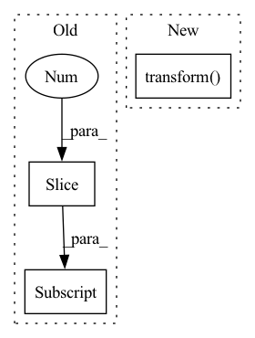

Pattern ID :9555
Before Change
if self.use_partitions:
ltd = dataset.get_metadata()[
"last-training-doc"]
self.id_corpus = X[0:ltd]
self.new_corpus = X[ltd:]
else:
self.id_corpus = X
After Change
test_corpus = []
for document in partition[1]:
test_corpus.append(" ".join(document))
Y = vectorizer.transform( test_corpus)
self.id_corpus = X
self.new_corpus = Y
else:
self.id_corpus = XIn pattern: SUPERPATTERN
Frequency: 4
Non-data size: 3
Instances Fragment ID: 34196667
Project Name: mind-lab/octis
Commit Name: b820471512354ea717b2ddf5fb01d8dafcab8aa0
Time: 2021-03-16
Author: s.terragni4@campus.unimib.it
File Name: octis/models/NMF_scikit.py
M Class Name: NMF_scikit
N Class Name: NMF_scikit
M Method Name: train_model(4)
N Method Name: train_model(4)
M Parent Class: Abstract_Model
N Parent Class: Abstract_Model
M File Name: octis/models/NMF_scikit.py
N File Name: octis/models/NMF_scikit.py
M Start Line: 100
M End Line: 154
N Start Line: 99
N End Line: 160
Before Change
fname = os.listdir(image_folder)[0]
image_path = os.path.join(image_folder, fname)
img = io.imread(image_path)[:, :, :3] .astype("float32")
img = transform.resize(img, (self.shape, self.shape))
mask = self.get_mask(mask_folder, self.shape,After Change
img = Image.open(image_path).convert("RGB")
mask = self.get_mask(mask_folder)
img = self.transform( img)
mask = self.target_transform(mask)
return img, mask, fname
Fragment ID: 34196669
Project Name: tuttelikz/farabio
Commit Name: 0f431d2e3fa741ab639daade70a7e1e878fa524b
Time: 2021-07-29
Author: s.askaruly@gmail.com
File Name: farabio/data/biodatasets.py
M Class Name: DSB18Dataset
N Class Name: DSB18Dataset
M Method Name: __getitem__(2)
N Method Name: __getitem__(2)
M Parent Class: Dataset
N Parent Class: Dataset
M File Name: farabio/data/biodatasets.py
N File Name: farabio/data/biodatasets.py
M Start Line: 223
M End Line: 237
N Start Line: 238
N End Line: 247
Before Change
fname = os.listdir(image_folder)[0]
image_path = os.path.join(image_folder, fname)
img = io.imread(image_path)[:, :, :3] .astype("float32")
img = transform.resize(img, (self.shape, self.shape))
mask = self.get_mask(mask_folder, self.shape,After Change
img = Image.open(image_path).convert("RGB")
mask = self.get_mask(mask_folder)
img = self.transform( img)
mask = self.target_transform(mask)
return img, mask, fname
Fragment ID: 34196668
Project Name: tuttelikz/farabio
Commit Name: 2169ebbe0a5d7c4307303181cdf96c0f802f8da6
Time: 2021-07-29
Author: s.askaruly@gmail.com
File Name: farabio/data/biodatasets.py
M Class Name: DSB18Dataset
N Class Name: DSB18Dataset
M Method Name: __getitem__(2)
N Method Name: __getitem__(2)
M Parent Class: Dataset
N Parent Class: Dataset
M File Name: farabio/data/biodatasets.py
N File Name: farabio/data/biodatasets.py
M Start Line: 223
M End Line: 237
N Start Line: 238
N End Line: 247
Before Change
config = self.model.default_cfg
if isinstance(config["input_size"], tuple):
img_size = config["input_size"][-2:]
else:
img_size = config["input_size"]
transform = timm.data.transforms_factory.transforms_imagenet_eval(After Change
It is preferred if the returned list is in decreasing `score` order
im = inputs.convert("RGB")
inputs = self.transform( im) .unsqueeze(0)
with torch.no_grad():
out = self.model(inputs) Fragment ID: 34196670
Project Name: huggingface/huggingface_hub
Commit Name: c59cdc19b16299710616d1dcdfd6d84e0299e78f
Time: 2021-09-06
Author: nxr9266@g.rit.edu
File Name: api-inference-community/docker_images/timm/app/pipelines/image_classification.py
M Class Name: ImageClassificationPipeline
N Class Name: ImageClassificationPipeline
M Method Name: __call__(2)
N Method Name: __call__(2)
M Parent Class: Pipeline
N Parent Class: Pipeline
M File Name: api-inference-community/docker_images/timm/app/pipelines/image_classification.py
N File Name: api-inference-community/docker_images/timm/app/pipelines/image_classification.py
M Start Line: 28
M End Line: 53
N Start Line: 38
N End Line: 49